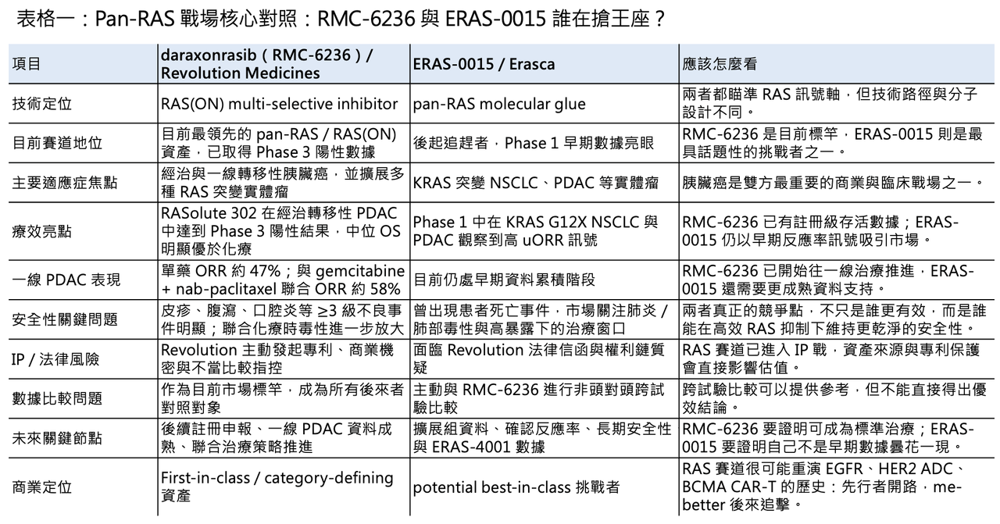
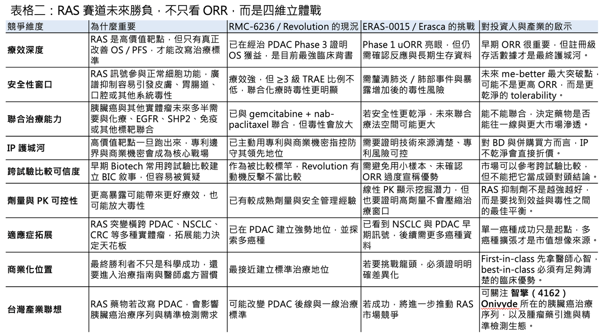

【Pan-RAS 戰爭升級：Erasca 數據驚艷，卻撞上 Revolution 的專利戰與安全性陰影】
分享這篇分析
把這篇文章轉給關注生技醫藥、公司研究或資本市場的朋友。
📌 RAS 賽道，正在從「誰的療效更強」進入「誰能同時守住安全性、IP 與商業化窗口」的新階段。

過去幾十年，RAS 一直被視為 oncology 裡最難攻克、也最有價值的聖杯之一。尤其在 pancreatic ductal adenocarcinoma（PDAC）裡，KRAS / RAS 變異幾乎是疾病的核心驅動之一；如果能真正用口服小分子打穿這條路徑，意義不只是多一個新藥，而是可能重寫胰臟癌這個最難治實體瘤之一的治療格局。
也正因如此，Revolution Medicines 的 daraxonrasib（RMC-6236）才會讓市場如此興奮。4 月中旬，公司宣布 daraxonrasib 在經治轉移性 PDAC 的 Phase 3 RASolute 302 試驗中達到主要與關鍵次要終點，整體族群中位總存活期 13.2 個月，對照組標準化療為 6.7 個月，死亡風險大幅下降，這被市場視為泛 RAS 抑制劑走向註冊成功的分水嶺。
但真正精彩的地方在於，Revolution 剛把 RAS 靶點推上神壇，競爭者就開始從後方高速追擊。
4 月 27 日，Erasca 公布其 pan-RAS molecular glue ERAS-0015 的 Phase 1 劑量爬坡資料。公司將數據包裝得非常有攻擊性，不只強調 ERAS-0015 在 KRAS 突變實體瘤中展現「potential best-in-class」特徵，還主動把資料拿來與 Revolution 的 daraxonrasib 做跨試驗比較。結果是，Erasca 的數據一方面讓市場看見第二個可能挑戰 RAS 王座的玩家；另一方面，也直接引爆了 Revolution 的法律反擊、方法學質疑與投資人對安全性的焦慮。
這場衝突真正值得看的，不只是誰的 ORR 比較高，而是：當一個超級靶點進入白熱化競爭，臨床數據、智慧財產權、安全性與商業宣傳，會如何同時變成戰場。

01｜Erasca 的 ERAS-0015：數據很亮，但亮得太有攻擊性
🧬 Erasca 這次公布的資料來自兩項 Phase 1 劑量爬坡研究：美國的 AURORAS-1，以及由其合作方 Joyo Pharmatech 在亞洲執行的 JYP0015M101。ERAS-0015 是一款口服、highly potent pan-RAS molecular glue，設計上用來抑制 RAS signaling，並希望透過同時處理 mutant RAS 與 wild-type RAS variants，降低後續抗藥性風險。
資料最吸睛的地方，是早期腫瘤反應率。
在 KRAS G12X 突變非小細胞肺癌（NSCLC）患者中，Erasca 使用 uORR₈wk，也就是第 8 週 confirmed + unconfirmed objective response rate，作為早期療效指標；在 pancreatic ductal adenocarcinoma（PDAC）患者中，則使用 uORR₁₄wk。公司在新聞稿中直接引用既有文獻與會議資料，把 ERAS-0015 與 Revolution 的 daraxonrasib（RMC-6236）做比較，試圖證明 ERAS-0015 在 NSCLC 與 PDAC 都可能具備更高早期反應率。
從市場溝通角度看，這當然很有效。因為 RAS 賽道現在最重要的參照物就是 daraxonrasib。只要能讓投資人相信 ERAS-0015 在早期資料上有機會追上甚至超過 RMC-6236，估值想像就會被迅速打開。
但從臨床科學角度看，問題也正好出在這裡。
跨試驗比較從來都很危險。不同試驗的患者基線、入組條件、既往治療線數、影像評估頻率、資料截點、確認反應標準、樣本數成熟度都不一樣。尤其是 Phase 1、樣本量小、以 unconfirmed ORR 為主的早期資料，如果直接用百分點相減來說「領先多少」，很容易讓人誤以為已經有頭對頭優效性證據。
這也是為什麼外部分析師一方面承認 Erasca 資料非常有吸引力，一方面又提醒市場：這還是非常 preliminary 的早期資料，不足以直接證明 ERAS-0015 已經優於 daraxonrasib。Erasca 自己也在資料說明中定義 uORR 為 confirmed and unconfirmed responses，這代表後續成熟資料、確認反應與 duration of response 仍然非常關鍵。
所以，ERAS-0015 這次真正做到了兩件事：
它證明自己值得被放進 pan-RAS 第一梯隊觀察；但它也因為過度靠近 Revolution 的比較框架，把自己推進了一場更大的戰爭。

02｜Revolution 的反擊：不是只有數據之爭，而是專利、商業機密與宣傳口徑三線作戰
⚖️ 就在 Erasca 發布數據前夕，Revolution 透過法律信函向 Erasca 提出嚴厲指控。Erasca 在 8-K 文件中披露，公司於 4 月 24 日收到 Revolution 律師函，對方提出三項核心主張。
第一，是專利侵權。
Revolution 指稱，ERAS-0015 與其美國第 12,409,225 號專利中某些組合物「substantially equivalent」，並主張 ERAS-0015 依據 doctrine of equivalents 可能構成侵權。所謂等同原則，簡單說就是：即使被控產品沒有逐字落入專利請求項，只要它以實質相同方式、完成實質相同功能、達成實質相同結果，仍可能被認定侵權。
這對 ERAS-0015 很敏感。因為 daraxonrasib 與 ERAS-0015 都屬於 RAS pathway 的新型小分子策略，且都與 RAS(ON) biology、molecular glue / tri-complex 類似方向有關。雙方真正要爭的，不只是「分子是不是一樣」，而是專利保護範圍是否能涵蓋這類作用方式的核心概念。
第二，是商業機密盜用。
Revolution 在信中主張，第三方在與 ERAS-0015 相關的專利中盜用了其 alleged trade secrets，而 Erasca 作為 licensee 也可能負有責任。這個指控的敏感性在於，ERAS-0015 並不是 Erasca 完全內部自研，而是來自與外部合作方的授權關係。Erasca 2024 年取得 JYP0015，也就是 ERAS-0015 的全球獨家授權，並在後續進一步整合大中華區權益。
對投資人來說，這類指控最麻煩的地方，不一定是短期是否立刻敗訴，而是它會增加資產權利鏈的折扣。創新藥最怕的不是單純競爭，而是核心管線的 IP chain of title 被質疑。一旦技術來源、商業機密、專利範圍出現不確定性，未來授權、併購、融資、甚至註冊與商業化都會被買方與法務反覆追問。
第三，是不當比較。
Revolution 要求 Erasca 停止與 RMC-6236 進行所謂「deceptive and untrue comparative statements」。這一點其實很值得玩味。臨床開發公司當然希望告訴市場自己比競品好，但在早期資料、非頭對頭試驗、樣本量有限的情境下，宣稱 best-in-class 或直接對標領先者，很容易踩進監管、投資人關係與法律風險的灰區。
Erasca 則表示，Revolution 的主張毫無根據，公司會積極抗辯。
這場爭議說明一件事：當 pan-RAS 進入真正高價值階段，競爭早就不是只比誰的腫瘤縮得快。專利護城河、商業機密來源、公開資料表述、法律戰節奏，都會成為同一場商業戰的一部分。
03｜患者死亡事件：安全性陰影為 ERAS-0015 的高光數據降溫
⚠️ 如果只有法律爭議，Erasca 還可以把它包裝成競爭對手試圖干擾數據發布。
但另一件事更讓市場不安：臨床中出現一例患者死亡。
根據市場報導，一名晚期胰臟癌患者在 ERAS-0015 試驗中出現 pneumonitis / pneumonia 相關事件，後續在撤回支持性治療後死亡。Erasca 管理層強調，患者死亡與其停止支持性治療有關，並不代表藥物本身直接導致；部分分析師也認為，這組數據整體仍非常亮眼。但市場反應很直接：Erasca 股價在數據發布後大跌，因為投資人不只看 ORR，也開始重新評估治療窗口。
這裡要講清楚一件事：早期腫瘤試驗出現患者死亡，不一定等於藥物失敗。尤其 PDAC 患者本身疾病侵襲性極高，晚期患者身體狀況複雜，感染、肺炎、疾病進展、治療相關不良事件之間常常交織，很難用單一事件立刻做結論。
但在 pan-RAS 這類高強度 pathway 抑制藥物上，市場一定會特別敏感。
原因很簡單：RAS pathway 不只存在於癌細胞，也參與正常細胞生理訊號。當你追求更強、更廣、更深的 RAS 抑制，理論上就可能碰到正常組織耐受性的天花板。ERAS-0015 顯示出 well-behaved linear PK，直到較高劑量仍有暴露增加空間，這代表療效挖掘潛力；但另一面，也代表如果毒性隨暴露增加而放大，治療窗口就會成為最大問題。
對 ERAS-0015 來說，接下來最重要的不是再拿幾個漂亮的 unconfirmed response，而是用更大樣本、更長隨訪、更成熟安全性資料證明：這個藥的高 potency 不會以不可接受的肺部毒性、皮膚毒性、胃腸道毒性或其他系統性風險作為代價。
在 oncology 裡，療效強很重要。
但如果安全性不穩，尤其是未來要往聯合治療走，藥物價值會被大幅折扣。
04｜RMC-6236 的一體兩面：療效建立標竿，毒性也留下超越窗口
📊 公平地說，Revolution 的 daraxonrasib 現在仍是 RAS 賽道最有分量的領先者。
RASolute 302 的 Phase 3 結果非常強。過去胰臟癌治療長期被化療主導，二線以後選項有限，存活期改善困難。Daraxonrasib 在經治轉移性 PDAC 中把中位 OS 拉到 13.2 個月，相較化療 6.7 個月幾乎翻倍，這不是一般早期 signal，而是具有 practice-changing 意義的註冊級結果。而且，daraxonrasib 在一線 PDAC 也開始展現野心。
Revolution 在 AACR 2026 公布的一線資料顯示，在未經系統治療的 RAS 突變轉移性 PDAC 中，daraxonrasib 單藥 300 mg QD 的 ORR 達 47%，疾病控制率 92%，6 個月 OS 估計值 83%；與 gemcitabine + nab-paclitaxel（GnP）聯合時，confirmed ORR 達 58%，6 個月 PFS 估計值 84%，6 個月 OS 估計值 90%。
這些數據足以說明，RMC-6236 不是只能在後線撿便宜，而是有機會往一線標準治療推進。
但它也有另一面：毒性並不輕。
在一線單藥資料中，daraxonrasib 所有等級治療相關不良事件發生率達 95%，Grade ≥3 TRAEs 為 38%，常見 Grade ≥3 事件包括 rash、diarrhea、stomatitis。聯合 GnP 後，任何等級 TRAEs 發生於所有患者，Grade ≥3 TRAEs 達 73%，serious TRAEs 28%，其中化療相關血液毒性與胃腸道不良反應都非常明顯。
這並不代表 RMC-6236 不能成功。相反，在 PDAC 這種高死亡率疾病中，只要生存獲益足夠大，醫師與患者對不良反應的容忍度會比慢病或輔助治療場景更高。Revolution 也強調目前 safety profile manageable，且沒有新的安全訊號。
但這給後來者留下了一個非常清楚的 me-better 空間：
誰能在保持高 RAS 抑制活性的同時，把皮膚、口腔、胃腸道與聯合化療時的毒性壓得更低，誰就有機會在 Revolution 之後拿到真正的 BIC 敘事。
05｜泛 RAS、泛 KRAS、突變選擇性：未來競爭不只比「誰更廣」
RAS 賽道最有趣的地方，在於不同公司選擇了不同的廣度。
Daraxonrasib（RMC-6236）是 RAS(ON) multi-selective inhibitor，目標是處理廣泛 RAS-addicted tumors，包括多種 KRAS、NRAS、HRAS 驅動的癌症。這種策略的優點是覆蓋面大，尤其在 PDAC 這種 RAS 變異高度集中但具多樣性的腫瘤中，很有價值。缺點是，越廣的 RAS 抑制越可能碰到正常組織訊號干擾，安全性窗口要靠劑量、選擇性與管理策略來維持。
ERAS-0015 則被 Erasca 定位為 pan-RAS molecular glue，試圖以更高 potency 與較低起效劑量建立差異化。公司也同時布局 ERAS-4001，一款 pan-KRAS inhibitor，預計在 2026 年下半年公布 BOREALIS-1 的 Phase 1 單藥初步資料。這代表 Erasca 並不是只押一個 ERAS-0015，而是在 RAS / KRAS 軸線上用多分子組合下注。
此外，Revolution 自己也不只有 RMC-6236。其 pipeline 還包括 zoldonrasib（RMC-9805，RAS(ON) G12D-selective inhibitor）、elironrasib（RMC-6291，RAS(ON) G12C-selective inhibitor）、RMC-5127（G12V-selective inhibitor）等。也就是說，即使 Revolution 目前靠 RMC-6236 站上第一梯隊，它自己也知道未來不會只有「廣譜」一種打法。
這裡的產業問題很清楚：
🧭 泛 RAS 有機會吃最大族群，但安全性壓力最高。
🧭 泛 KRAS 可能比泛 RAS 更聚焦，減少 NRAS / HRAS 正常組織干擾。
🧭 突變選擇性 inhibitor 覆蓋較窄，但治療窗口可能更乾淨。
🧭 Molecular glue / tri-complex / non-covalent inhibitor 等不同技術路徑，又會進一步影響 potency、選擇性、PK 與聯合用藥可行性。
所以，未來 RAS 競爭不會是單純 FIC 對 BIC。它更像一個矩陣戰：不同腫瘤、不同突變、不同治療線、不同聯合方案，可能需要不同 RAS 抑制策略。
06｜誰會是 me-better？RAS 賽道會重演 EGFR、HER2 ADC 和 BCMA CAR-T 的歷史嗎？
生醫創新的聖杯，往往先屬於先行者，但最終商業王座不一定永遠屬於第一個上岸的人。
🏁 第三代 EGFR inhibitor Tagrisso（osimertinib）改寫了早期 EGFR TKI 的格局。
🏁 HER2 ADC Enhertu（trastuzumab deruxtecan）讓後來者用更強療效重塑整個 HER2 治療想像。
🏁 BCMA CAR-T 裡，Carvykti（ciltacabtagene autoleucel）雖然不是第一個上市，卻用極深緩解率與長期資料快速追上甚至超越先行者 Abecma（idecabtagene vicleucel）的市場敘事。
RAS 很可能也會走類似路徑。
Revolution 的 daraxonrasib 已經用 Phase 3 資料證明：RAS 不再是不可成藥的神話。這是歷史性突破。但當第一個藥物證明路徑可行後，後來者就會開始集中攻擊它的弱點：毒性、更佳劑量強度、更好的聯合治療耐受性、更精準突變覆蓋、更少皮膚與口腔毒性、更強 CNS penetration，或更清楚的 biomarker selection。
Erasca 的 ERAS-0015 就是第一個很典型的挑戰者：它不是從零教育市場，而是直接借 Revolution 打開的 RAS 大門，試圖用 potency、劑量、早期反應率與 tolerability 故事建立第二波敘事。
但它要真正成為 me-better，不能只靠跨試驗比較。
它必須回答三個問題：
🌏 第一，反應率能否在更大樣本與確認反應中維持？
🌏 第二，安全性是否真的優於 daraxonrasib，尤其是肺部事件與聯合用藥耐受性？
🌏 第三，IP 與技術來源是否乾淨，能否支撐全球開發與商業化？
如果這三題回答不了，再漂亮的早期 ORR 都只能暫時點火，無法真正變成資產價值。
07｜胰臟癌治療格局的改變台灣公司中槍？
台灣最直接能聯想到的上市櫃公司不是某家 RAS inhibitor 公司，因為台灣目前沒有真正站在 global pan-RAS 第一梯隊的上市標的。
比較合理的聯想，是智擎（4162）。
智擎的核心資產 Onivyde（irinotecan liposome injection）是胰臟癌治療領域的重要產品之一，後續由國際夥伴推進全球商業化。Onivyde 長期位於 PDAC 治療序列中，尤其在既往 gemcitabine-based therapy 後的治療情境有其歷史定位。現在 daraxonrasib 這類 RAS(ON) inhibitor 若成功進入後線甚至一線 PDAC，未來胰臟癌治療序列就可能重新洗牌。對智擎來說是提醒：PDAC 這個長期被化療主導的市場，正在進入標靶藥物真正能改變標準治療的時代。
【結語｜RAS 賽道不再只是療效比拼，而是立體戰】
Erasca 的 ERAS-0015 數據很漂亮。
Revolution 的 daraxonrasib 更已經用 Phase 3 存活資料建立了歷史地位。但這場戰爭才剛開始。
RAS 賽道正在從「不可成藥」的科學突破，進入「誰能成為標準治療」的產業競爭。第一階段比的是藥效；第二階段比的是安全性；第三階段比的是聯合用藥；第四階段比的是 IP、法規、商業化與全球可及性。
Erasca 這次遇到的三重壓力，其實正好反映了創新藥競爭的新常態：
✨ 臨床資料再亮眼，也不能忽略跨試驗比較的科學邊界。
✨ 反應率再高，也要經得起安全性與治療窗口檢驗。
✨ 資產再有潛力，也必須確保 IP 來源乾淨、權利鏈穩固。
✨ 想挑戰龍頭，就必須準備好面對龍頭的法律、科學與商業反擊。
當低垂的果實被摘完，真正的創新藥競爭不再是單點突破，而是全方位作戰。
RAS 是下一代 oncology 最大的戰場之一。
但能活到最後的，不一定只是第一個跑出數據的公司，而是那個能同時回答「有效、安全、可保護、可商業化」四個問題的玩家。
參考資料：
[0]: 公開資料＆各公司官網
[1]:
"Daraxonrasib Demonstrates Unprecedented Overall Survival Benefit in Pivotal Phase 3 RASolute 302 Clinical Trial in Patients with Metastatic Pancreatic Cancer | Revolution Medicines"
[2]:
"Erasca Announces Positive Preliminary Phase 1 Dose Escalation Data for Potentially Best-in-Class Pan-RAS Molecular Glue ERAS-0015 in KRAS-Mutant Solid Tumors – Erasca"
[3]:
Erasca Stock Plummets After Patient Death Strikes Its Chance To Rival Revolution | Investor's Business Daily
Erasca stock crashed Tuesday after a patient in its pancreatic cancer study died following a bout of pneumonia.
www.investors.com
[4]:
8-K
https://www.sec.gov/Archives/edgar/data/1761918/000119312526179214/eras-20260427.htm
www.sec.gov
"8-K"
[5]:
"Revolution Medicines to Present Updated Phase 1/2 Clinical Data for Daraxonrasib in First Line Metastatic Pancreatic Cancer Across Monotherapy and Combination Cohorts at the 2026 AACR Annual Meeting | Revolution Medicines"
[6]:
引用本文
若在簡報、報告或社群討論引用，建議附上 Drugnews 原文連結。
Drugnews 編輯部，〈下一代世紀大藥的陰影？〉，Drugnews｜藥時事，2026/05/07，https://drugnews.com.tw/articles/2026-05-07-pan-ras-patent-safety-war.html
社群原文
讀完這篇，下一步看
這三篇會優先依主題、標籤與產業脈絡推薦，幫你把同一個問題讀得更完整。

Revolution Medicines 神話：會研發還不夠，會融資才撐得過新藥長跑
2026 年，全球最受矚目的 Biotech 之一，毫無疑問是 Revolution Medicines。這家公司站在一個極難、也極誘人的位置：RAS-addicted cancers。

2026 ASCO：生存期翻倍、體內 CAR-T 破局，腫瘤治療正在換一個時代
2026 年美國臨床腫瘤學會年會，也就是 ASCO，最該被記住的贏家，並不是任何一家藥廠，而是癌症患者。

胰臟癌再爆：RAS 抑制劑之後，PRMT5／MAT2A 聯合療法把想像空間再打開
胰臟癌正在進入 RAS 抑制劑與 PRMT5／MAT2A 合成致死聯合療法的新階段，市場開始重新評估 daraxonrasib 作為治療骨架的價值。